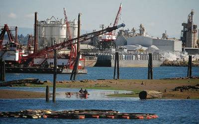

Clawing Catastrophe
CSE 493F - Prototyping Interactive Systems with AI
The Duwamish River is a longtime source of food, tradition, and culture for Indigenous people, thus the chemicals pollutants present disproportionately affect Native people’s health.